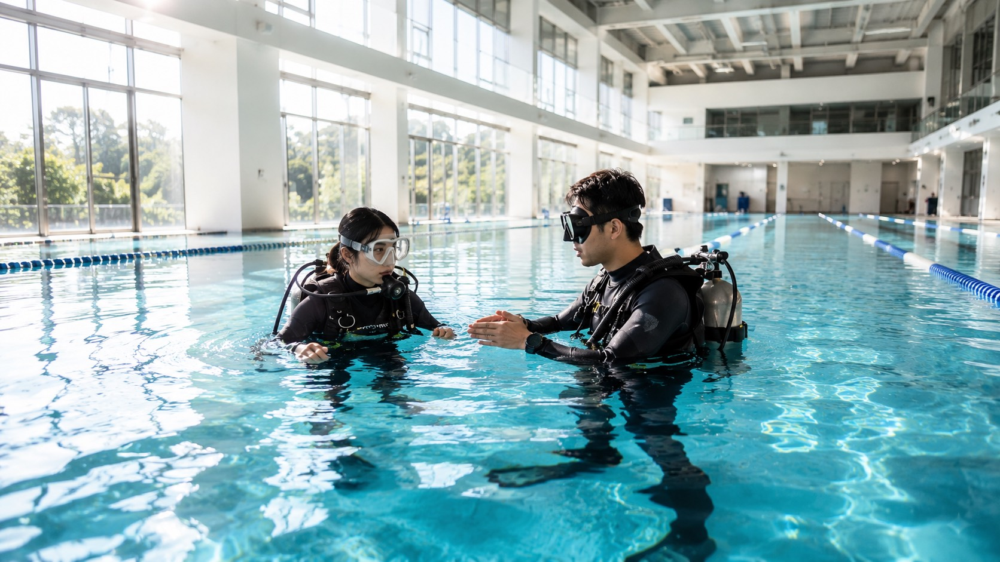
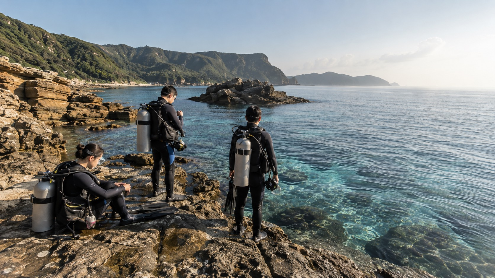
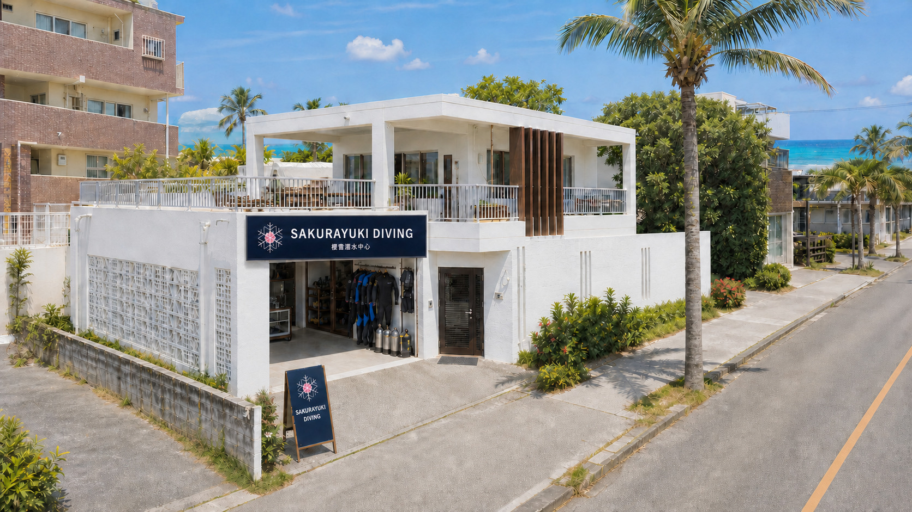

YAKINIKU
琉球の牛
沖繩和牛與燒肉料理。
READ STORY →櫻雪潛水中心提供台北仁愛（平靜水域）＋東北角龍洞（開放水域）＋沖繩青洞（開放水域＋潛旅）三據點，由專業教練提供課程與考核指導。

台北 · SY Diving Ren'ai
全年恆溫游泳池，安排一次平靜水域課程。可依時間彈性安排一至兩支氣瓶，例如假日一整天或兩個平日晚間；內容包含面鏡排水、面鏡脫著、裝備脫著、調節器尋回等基礎技巧。

新北市貢寮 · 台湾北部
台灣成熟的開放水域潛點，台北出發約 1 小時。提供 PADI 開放水域上課與考核的在地選項；龍洞開放水域課程需安排兩天、共四支氣瓶。

桜雪沖縄 · 真栄田岬 — 沖縄県恩納村
櫻雪沖繩據點提供 PADI 開放水域上課與考核，也可搭配潛旅行程；在真正的大海中落實平靜水域所學，親身體驗並學習中性浮力。
從白色建築、棕櫚樹到海風，這裡是櫻雪在沖繩的集合點，也是出發前整理裝備與認識海況的地方。



從恩納村的櫻雪基地出發，潛進青之洞窟，也把海岸、島嶼風景與在地味道排進旅程。考證、體驗與旅行，在同一段海島時間裡自然完成。
不只下水，也留一點時間給沖繩的海風、珊瑚與清澈光線。


把恩納村周邊的味道與沖繩風景，一起排進海島旅程裡。
沖繩和牛與燒肉料理。
READ STORY →
海鮮與沖繩風味料理。
READ STORY →
旅行途中溫暖的一碗豚骨拉麵。
READ STORY →
經典沖繩美式牛排。
READ STORY →
海景與輕盈的島嶼午後。
READ STORY →
沖繩經典炸甜點。
READ STORY →
古民家裡品嘗沖繩料理。
READ STORY →
藏在綠意裡的窯烤麵包。
READ STORY →
由 PADI 認證教練指導，完成開放水域潛水員（Open Water Diver）課程與考核。
面鏡排水、面鏡脫著、裝備脫著、調節器尋回等基礎技巧。可依時間彈性安排於假日一整天或兩個平日晚間。
在真正的大海中將平靜水域學到的各項技巧落實，親身體驗與學習中性浮力。
完成開放水域課程與考核。龍洞需安排兩天、四支氣瓶；沖繩青洞安排四支氣瓶，實際行程依海況與預約確認。
 PADI 開放水域潛水員證照Open Water Diver · 課程與考核完成後取得
PADI 開放水域潛水員證照Open Water Diver · 課程與考核完成後取得
青の洞窟 · 5 天 4 夜
依出發日期個別報價
課程費用包含證照、教練、教材及所有裝備；個人飲食、交通等費用另計。健康聲明、取消規則與完整注意事項將於預約時提供。
由教練帶領，親身感受青洞的海水與魚群。包含面鏡、蛙鞋、呼吸管；實際下水時間約四十分鐘，不包含上下岸與盥洗時間。
由教練手把手帶領深入大海，沉浸在珊瑚、魚群與陽光之中，享受水中無重力與自由探索的體驗。
除了青之洞窟，也可依證照、經驗、季節與海況，詢問萬座、慶良間等特色潛點；想安排更特別的海島體驗，也能另行確認鯨鯊行程或冬季慶良間賞鯨。實際安排以當地船班與安全評估為準。
櫻雪自有游泳池全年恆溫，除 PADI 平靜水域訓練外，另提供游泳課程與場地出租
台北市大安區仁愛路四段 130 號 · 9 水道 · 25m · 水深 1.2m · 免戴泳帽

冬はスキー、夏はダイビング。
專業教練團隊，陪你從雪場到海島探索四季。
揪團 4 人以上每人折 1,000 · 舊毒友再折 300 · 最多折 1,300
可以。PADI 只要求不靠漂浮器材在水面待 10 分鐘，並能連續游泳 200 公尺（不限姿勢、不限時間）。重點是不恐慌、能在水中照顧自己。
可以。戴隱形眼鏡下水，或租用有度數的面鏡。報名時備註度數即可。
終身有效，全球通用。若超過半年未潛水，建議先參加 Refresher 複習課程。
最低 10 歲可取得 Junior OW 證照，15 歲以上可取得標準 OW 證照。上限無硬性規定，通過健康評估即可。
沖繩方案為 5 天 4 夜，因下水安排兩天，下水後隔天不能搭飛機。包含台北平靜水域訓練與沖繩青洞開放水域上課、考核；實際行程與費用確認後提供。
當然。兩人以上同行另有優惠。揪團 4 人以上每人現折 1,000 元。
可以。仁愛游泳池全年恆溫 28°C，冬天照常開課。沖繩也全年可潛。
不需要。課程費用已含全套潛水裝備使用。若自有裝備可折抵部分費用。
青之洞窟可以是旅程的起點，不必是唯一目的地。櫻雪會依旅客的證照、經驗、季節與當日海況，從恩納村帶你前往萬座等西海岸潛點；條件合適時，也能進一步安排慶良間船潛，看到沖繩更多不同的海。
SAKURAYUKI OKINAWA BASE 〒904-0416 沖縄県恩納村山田 591-1 ↗SCHEMATIC MAP · 實際潛點依當日海況與安全評估安排